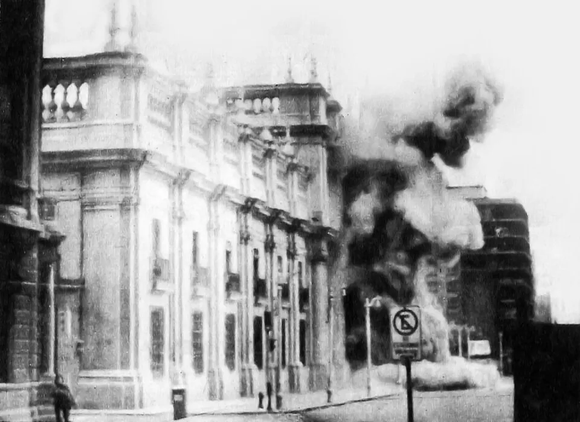

Golpe de Estado de 1973

El 11 de septiembre de 1973, las Fuerzas Armadas y Carabineros derrocaron al gobierno de Salvador Allende. Una Junta Militar presidida por Augusto Pinochet exigió la rendición del presidente, y aviones de la Fuerza Aérea bombardearon el palacio de La Moneda, en Santiago. Allende dirigió un último mensaje por radio y murió en el palacio; la investigación judicial concluyó que se quitó la vida. El golpe fue precedido por una crisis profunda: alta inflación, desabastecimiento, mercado negro, paros como el de los camioneros de 1972, un intento de golpe en junio de 1973 y un acuerdo de la Cámara de Diputados que, en agosto, acusó al gobierno de quebrantar la legalidad. Las explicaciones difieren: unos ponen el acento en las políticas de la Unidad Popular y en sectores de izquierda que defendían la vía armada; otros, en la oposición que buscó desestabilizar al gobierno y en la intervención de Estados Unidos, documentada en archivos desclasificados. Muchos historiadores subrayan responsabilidades compartidas y la erosión de los acuerdos democráticos en plena Guerra Fría. El golpe dio inicio a la Dictadura militar: se cerró el Congreso, se prohibieron los partidos y comenzaron graves Violaciones a los derechos humanos.
Versión para niños
Durante el gobierno de Salvador Allende, los chilenos estaban muy divididos y había muchos problemas, como la falta de productos en los almacenes. El 11 de septiembre de 1973, las Fuerzas Armadas y Carabineros tomaron el poder por la fuerza. El palacio de La Moneda, donde trabaja el presidente, fue atacado, y ese día murió el presidente Allende. Así se interrumpió la democracia y comenzó una dictadura encabezada por Augusto Pinochet, que duró hasta 1990.
Para maestros
Nivel sugerido: 2° medio
Objetivo: Analizar las causas de la crisis de la democracia en 1973 desde distintas interpretaciones historiográficas, distinguiendo hechos de opiniones.
Preguntas para la clase:
- ¿Qué factores económicos, políticos e internacionales ayudan a explicar la crisis de 1973?
- ¿Por qué los historiadores no coinciden en la responsabilidad de cada actor?
- ¿Era inevitable el quiebre de la democracia? ¿Qué podría haberlo evitado?
Actividad (20–30 min): Antes de comenzar, el docente acuerda normas de respeto con el curso y recuerda que en las familias pueden existir memorias distintas sobre este hecho; nadie está obligado a compartir experiencias familiares. Luego, en grupos, los estudiantes leen dos o tres interpretaciones breves sobre las causas del golpe y completan una tabla con los argumentos y evidencias de cada una. Cierran con una reflexión sobre el valor de la democracia y del diálogo.
Fuentes sugeridas: Museo de la Memoria y los Derechos Humanos; Memoria Chilena; Biblioteca del Congreso Nacional (BCN).
Objetivos de Aprendizaje (Currículum Nacional)
- 6° básico · HI06 OA 08 Comparar diferentes visiones sobre el quiebre de la democracia en Chile, el régimen o dictadura militar y el proceso de recuperación de la democracia
- 2° medio · HI2M OA 10 Caracterizar el contexto de movilización social en América Latina … los golpes de Estado, las dictaduras militares
- 2° medio · HI2M OA 14 Analizar el ambiente de crisis a inicios de la década del 70, considerando aspectos como la polarización social y política
- 2° medio · HI2M OA 15 Analizar y comparar críticamente distintas interpretaciones historiográficas sobre el golpe de Estado de 1973 y el quiebre de la democracia
Personajes
Revisión humana pendiente. Cómo se revisa · Reportar un error
Cómo citar: Historia de Chile. (2026). Golpe de Estado de 1973. En Historia de Chile: atlas y línea de tiempo. https://moises-salgado.github.io/historia-de-chile/momento/golpe-de-estado-de-1973.html